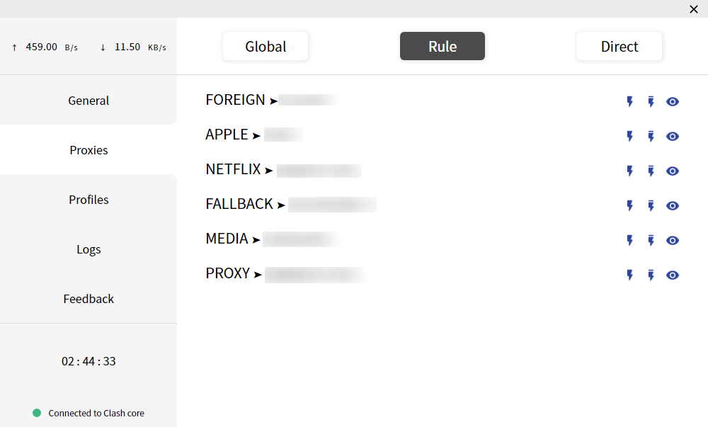
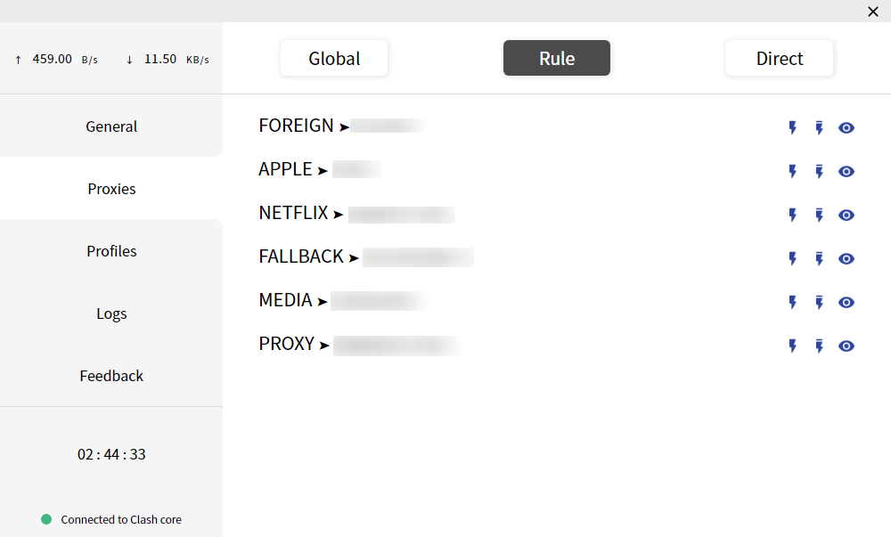

代理 Proxies

代理页面主要的作用就是切换代理模式和切换节点
切换代理模式
Clash共有三种工作模式：
- 全局（Global）：所有请求直接发往代理服务器
- 规则（Rule）：所有请求根据配置文件规则进行分流
- 直连（Direct）：所有请求直接发往目的地
切换不同模式时，对应的节点列表会对应变化
切换节点
节点按照策略组分开，并可以以组为单位进行延迟测试，可以方便选出延迟更低的节点。或者可以使用策略组优化逻辑，策略组原理请参考：策略组原理理解

代理页面主要的作用就是切换代理模式和切换节点
Clash共有三种工作模式：
切换不同模式时，对应的节点列表会对应变化
节点按照策略组分开，并可以以组为单位进行延迟测试，可以方便选出延迟更低的节点。或者可以使用策略组优化逻辑，策略组原理请参考：策略组原理理解